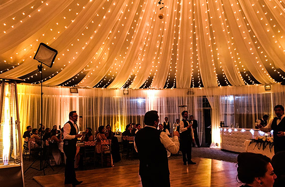

Alquiler de Espacios para Eventos
El jardín cuenta con varios salones, espacios al aire libre y gazebos que pueden usarse para realizar actividades culturales, sociales, educativas y recreativas. También están disponibles para grabaciones de comerciales, películas y videos.
Tipos de Espacios
Salones y áreas al aire libre.
Requisitos
Dirigirse a la oficina de eventos o completar un formulario en línea.
La reserva se realiza con un 30% del costo total.
Se debe depositar una fianza de un 20% por concepto de daños, roturas o basura dejada en el espacio.
El saldo del espacio rentado debe ser saldado con cinco (5) días de antelación a su evento.
Los elementos del montaje deben retirarse el mismo día.
Información de Contacto
Teléfono: (809) 385-2611 ext 248
Correo electrónico: eventos@jbn.gob.do
Dirección: Av. República de Colombia, esquina Los Próceres, Sector Altos de Galá. D.N.